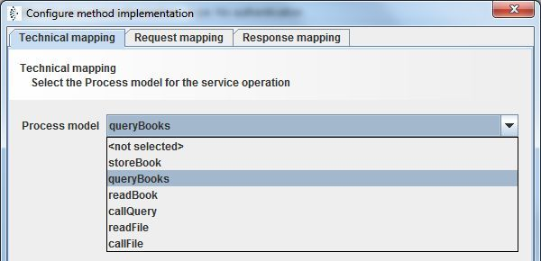

Method

Topic content
Description
Methods describe the capabilities of a service and they are crucial for the service the declaration.
Creation
In order to create a new Method object several steps need to be followed.
1.Double click on your in the Orchestra designer scenario tree to open the configuration panel.
2.In the left side of opened configuration panel, Right-click on the element.
3.Click on the option in order to create new object.
adding a method to a Resource
4.By default a new method will be created containing one request element.
Configuration
Configuration of a REST method
•Method description - description of the created method.
•Method - Defines the REST method type.
•Change technical mapping – defines the Orchestra internal process which will get the REST call.
•Implemented by – defines a process model implementing the selected method. In order to successfully assign the corresponding process model to the selected method, refer to the section Technical Mapping.
•synchronous – Check box to define the method as synchronous. A service having a response – e.g. a GET method – is always synchronous.
•Synchronous timeout – defines a time duration; if the method is defined as and after this time the assigned process model is not finished a HTTP 500 (internal error) will be returned to the caller.
•URL-Pattern - read only field showing an example URL of the method call based on path settings for the Resource element and the parameters.
•Request media type - The format of the request content. Defined in the object of the method.
•Response media type - The format of the method response. Defined in the object of the method.
Technical mapping
Every method must be assigned to a process model. To do this click on the Button .
Here the user can assign a process model which should be responsible for processing the data delivered by the REST service call and create the response data.

Then every parameter as well as the content data delivered by the service call can be assigned to a corresponding variable in the process model.